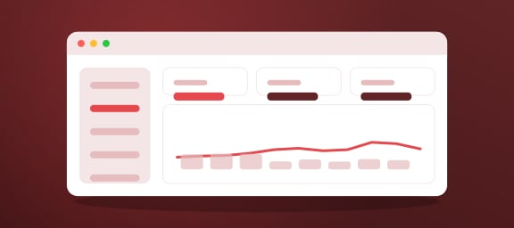

Introducing Taskline
Taskline gives every project a board, a timeline and a weekly update, so everyone knows what's happening without another status meeting.
Integrations
Drag tasks between columns, set due dates, and assign owners. The timeline view shows what's at risk and who's overloaded before it becomes a problem.
Mobile apps
Every Friday, Taskline turns finished tasks into a short update for your team or your clients. Edit it, or send it as it is.
Slack
Moving from another tool? Import boards from Trello, Asana or a CSV in a few clicks. Most teams are fully set up in an afternoon.
Google Drive
Taskline gives every project a board, a timeline and a weekly update, so everyone knows what's happening without another status meeting.
Templates
Drag tasks between columns, set due dates, and assign owners. The timeline view shows what's at risk and who's overloaded before it becomes a problem.

Automations
Every Friday, Taskline turns finished tasks into a short update for your team or your clients. Edit it, or send it as it is.